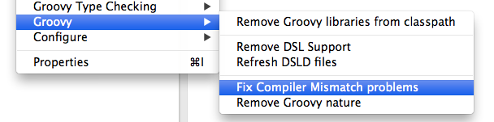
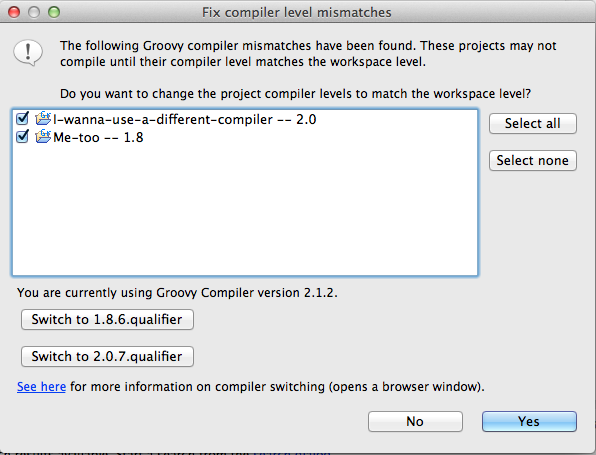
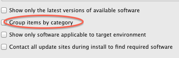

General Updates
Updated to Eclipse Kepler
The 4.x-based distributions of the STS and GGTS are now based on the latest Eclipse Kepler 4.3 release. In addition to that we will continue to ship 3.8.2-based distributions of STS and GGTS, but those distributions continue to consist of the Eclipse Juno components. That means, for example, that the Java tooling of Eclipse 3.8/4.2 is part of STS 3.3.0 on Eclipse 3.8.2 instead of the Java tooling updates from Eclipse 4.3.
If you came across bugs in Eclipse 3.8 and/or 4.2 that got fixed in Eclipse Kepler, you will have to use the latest STS 3.3.0 on Eclipse 4.3 distribution.
vFabric tc Server Developer Edition updated to 2.9.2
STS and GGTS now ships with the latest vFabric tc Server Developer Edition 2.9.2.
Spring Roo updated to 1.2.4
STS now ships with the latest Spring Roo 1.2.4.
Grails updated to 2.2.3
GGTS now ships with Grails 2.2.3.
Apache Maven and Spring IDE OSGi extension removed
We removed the Apache Maven runtime package from the distribution package of the Spring Tool Suite in order to provide a lighter download. An Apache Maven runtime for internal Eclipse usage is included in the Maven Integration for Eclipse and therefore isn't required. Nevertheless you can configure a different Apache Maven runtime in the tooling via the preferences.
We also removed the outdated Spring IDE OSGi extension from the default distribution. You can still get it from the update repository manually.
All this is part of our overall effort to provide a more lightweight tooling (and distribution) and we might remove more parts from the default distribution in upcoming milestones and releases. If you would like to see certain parts removed (or added), let us know. Feedback is always very welcome and can be provided through the STS JIRA or by posting a comment on the forum.
Quick Search for Eclipse
The new light-weight 'Quick Search' feature provides a simple yet effective text search popup dialog. The dialog was designed to have minimal overhead in terms of mouse-clicks and keypresses needed to open the dialog and jump to an interesting result.
A single keystroke (CTRL+SHIFT+L or CMD+SHIFT+L on Mac) opens the dialog from any context. The text selected in the current editor will be used to kick off the search initially. If the current selection is empty, your previous search will be used instead. Start typing to search for something else.
The search is incremental and updates the query of an ongoing search as you type. It also prioritizes what files to search first, based on what editors are currently open. This results in quick and responsive search experience even though it does not use a text index that needs to be kept up-to-date.
Use the arrow keys to quickly select an interesting result and press enter to open it in an editor.

Tip of the day
STS and GGTs now display a small popup window showing you useful tips for using STS and GGTS. This opens up automatically at startup and contains links for direct access to the mentioned features or resources.
Global preference curator
We collected a number of preferences that make Eclipse more awesome and fun to use. Those preferences can be set (and reset) by using the new global preference curator (in the SpringSource section of the preference dialog) via a single click, instead of setting each preference manually all over the place.
Performance and Memory Footprint
We continued our work on general performance and memory improvements throughout the distribution.
Spring Development Tools
Ready for Spring 4
STS 3.3.0 now includes and uses the latest Spring 4.0.0.M1 libraries to parse and analyze your projects. This ensures Spring 4 projects work flawlessly in the Spring Tool Suite.
New Spring Project Wizard
New Spring projects and template based projects can now be created from one single wizard. Previous versions of STS featured two separate wizards, one for creating Spring projects from templates, and another from a Java project with additional Spring configuration.
STS 3.3.0 has replaced both of these wizards with just one New Spring Project wizard, which can be opened from either the STS Dashboard, or from the File -> New... menu.
Much like the previous Spring Template wizard, which this new wizard is replacing, a user can create a project by choosing a template, as well as refresh and edit the list of available templates. In addition, a user can display self-hosted projects from the workspace.

The wizard also introduces Simple Projects, which allows users to quickly create a Spring project without any additional configuration aside from a project name. Unlike most templates that require further user input in subsequent pages, simple projects can be created right from the first page of the wizard.

The three types of simple projects are:
1. Simple Java: creates a basic Spring project based on a Java project without a top-level package, and with default Spring configuration. This is very similar to the old Spring Project wizard where a user was able to create a Spring Java project with additional Spring configuration. Although the only requirement is a project name, a user does have the option to navigate to subsequent pages for Simple Java to edit the default Spring configuration values, as well as modify the settings in the Java build page for the project.
2. Simple Spring Maven: creates a basic Spring project using Maven that contains a basic set of non-web Spring libraries. The user has the ability to create a Simple Spring Maven project using a choice of the following: Spring 3.2.3, 3.1.4, or 3.0.7.
3. Simple Spring Web Maven: creates a basic Spring web project using Maven that contains a basic set of Spring web libraries, like spring-web and spring-webmvc. The user has the ability to create a Simple Spring Web Maven project using a choice of the following: Spring 3.2.3, 3.1.4, or 3.0.7.
Finally, the New Spring Project wizard now allows users to select which version of Spring to use when creating and building a project. The options are to use the default Spring version defined in the template or simple project, or to select one of the following: 3.2.3, 3.1.4, 3.0.7.

Spring version support is not supported on all templates and Simple Projects. The drop-down UI for the Spring version selection is only enabled on certain templates and simple projects that support a range of Spring versions.
Support for JavaConfig only Spring projects
One of the major themes of STS 3.3.0 is to provide advanced support for JavaConfig and JavaConfig-only Spring projects. Therefore we added the option to configure @Configuration classes directly as Spring bean configs in the project settings (for those cases where you don't have any Spring XML config files anymore):
This allows you to benefit from the general tooling support for Spring projects without configuring a component-scanning element in a Spring XML config file just to make the tooling happy. You can select @Configuration classes directly from a filtered list of types that are available to your project:
Since Spring XML files and Spring JavaConfig classes are both now first-class citizens of the Spring tooling, you can use both to define your bean config sets to validate against specific scopes and bean profiles:
New context menu actions: an easier way to configure your Spring project
We've added a couple of new actions to the Spring Tools context menu for configuring types and XML files as beans configs. You can now directly right-click on a Java @Configuration class to configure that class as beans config for your project (and the same for Spring XML config files). The same way works for quickly removing types or XML files as Spring configurations from the project.
We also implemented context menu actions for arranging beans configs into config sets. You can invoke these actions by right-clicking on a config file or config set in the Spring Explorer view.
All those new actions provide you with a quicker way to change your Spring project configuration than by going through the project preference dialogs.
Autowired Bean Navigation
In this release we added ability to navigate to bean definition for autowired field or method parameter. You can access the hyperlink by CTRL+CLICK the field name or the parameter name with an @Autowire annotation and selecting the available hyperlink.
Improved content-assist for Spring annotations
We have improved content assist for java configuration annotation by adding content assist for package name and class attributes, starting with the @ComponentScan annotation.


Performance and Memory Footprint
We continued our work on performance and memory improvements for building Spring projects. Therefore we re-implemented parts of the underlying validation and build logic in order to consume less memory and increase performance at the same time. First measurements and experiences look promising, but also depend highly on the size of your projects and the workspace.
If you experience specific slowdowns, heavy memory usage, or both at the same time, please let us know and file a report using our JIRA system. Special thanks go to Stefan Kohrs, who reported a general performance issue and helped us a lot with profiling data, testing various milestone and snapshot builds, and reporting back the results. Thanks again!
AspectJ Development Tools
OSGi-ification and Smaller install size
The AspectJ bundles have been repackaged as proper OSGi bundles. This includes the AspectJ runtime, weaver, and ajde bundles (i.e., the compiler bundles). The AJDT jars (i.e., the Eclipse integration) have always been proper OSGi bundles with proper, separate source bundles. Source and documentation have been extracted from the AspectJ binary bundles and placed into proper source bundles. There is a new feature in the AspectJ update site to install just the AspectJ compiler standalone, without any of the IDE support. With these changes, typical install size has been reduced by about 5 Mb.
Groovy-Eclipse
Memory improvements
Significant memory improvements are now in Groovy-Eclipse. Here are some numbers. We imported the GPars project into an empty workspace of GGTS 3.2.0 (with Groovy-Eclipse 2.7.2) and also into an empty workspace of GGTS 3.3.0.M2 (with Groovy-Eclipse 2.8.0.M2). We also did the same for an empty Grails 2.2.2 project (i.e., run grails create-app and import the results). After a full clean-compile-clean-compile-GC-GC-GC cycle, you will notice a large difference in heap size:
| GPars project | Empty Grails project | |
|---|---|---|
| STS 3.2.0 (Groovy-Eclipse 2.7.2) |
348 Mb heap used | 130 Mb heap used |
| STS 3.3.0.M2 (Groovy-Eclipse 2.8.0.M2) |
133 Mb heap used | 108 Mb heap used |
| Improvement | 215 Mb | 22 Mb |
For compiling GPars, GGTS 3.3.0.M2 has more than 200 Mb smaller footprint. Empty Grails projects show a 22 Mb smaller GGTS footprint. For all the details, see GRECLIPSE-1633. Workspaces that declare enums or annotations in Groovy source will see this dramatic memory improvement. And there are other, smaller tweaks that apply memory improvements to all workspaces.
GGTS 3.3.0 comes with Groovy-Eclipse 2.8.0. In this release, we have put significant effort into handling multiple compiler versions and stabilizing our static type checking support. More details are below
Editor templates
The Groovy editor now supports templating similar to the Java editor. For example, when you invoke content assist, and the prefix matches an available template, you will see it in the content assist menu:
After applying the template, you get a chance to tab through the template variables and edit them:
The list of templates are available in Preferences -> Groovy -> Editor -> Groovy Templates:
Here you can edit existing templates or create new ones:
Surround with...
The Groovy editor now supports surround-with templates. This allows you to surround a selection of code with a template (similar functionality exists in the Java editor). To access this functionality, select some text, and press CMD/CTRL+1:

All the surround-with templates appear as quick fixes. This functionality is also available by Right-click -> Surround with. Or by typing CTRL/CMD+ALT+Z:
Selecting the last line to Configure templates... will open up the template preferences page shown above. All templates that use a ${line_selection} variable will appear in the Surround With menu.
Compiler switching
There are some significant changes in the way multiple compilers are handled in the workspace now. The back end implementation for this has been completely rewritten using different OSGi functionality. From a user's perspective, most functionality should be the same, except for the following differences:
- Compiler settings are now per-workspace, instead of per-install. This means that if you use multiple workspaces with different compiler levels, you no longer have to use separate shortcuts to launch them.
- There is now a Don't care setting for projects. In the Project Groovy compiler preferences page, you can set your project to Don't care and it will avoid checking for compiler mismatches no matter what compiler level the current workspace is using.
- There is now a compiler switching UI. Select a project with a compiler mismatch problem on it. Project -> Groovy -> Fix compiler mismatch problems:

Selecting this will bring up the following dialog that allows you to configure all projects throughout the workspace at once:

Navigation and hovers in binary Groovy files
Navigation to definitions and JavaDoc hovers are now supported in class files compiled from Groovy, when the source is available. You can see this here, when exploring the SwingBuilder class:
@DelegatesTo support
The Groovy 2.1 @DelegatesTo annotation is now supported in Groovy-Eclipse:

In the screenshot above, you can see the Email class and that it is being used as a delegate to the email function. The implementation is snipped, but you can see that when selecting the from field reference inside the closure, its definition is highlighted in the Email class. Also, the hover properly describes where the reference comes from.
Better anonymous inner type support
There is now full editor support for anonymous inner types.
The outline view works as expected with the inner type appearing properly named and inside of the method that declares it:

Searching for references to methods declared in anonymous inner types works as expected:

And navigation works as expected. Navigating from a method reference will take you to its declaration and navigating from the super-type of the anonymous type will take you to its declaration.

More precise error locations
Error markers now more precisely cover the error that they are describing, specifically with missing type references. As you can see in Groovy-Eclipse 2.8.0, missing types are fully underlined with red squiggles:

And the same class in Groovy-Eclipse 2.7.2 shows that the red squiggles are improperly placed.:

Smaller install size
We have repackaged the org.codehaus.groovy bundles and removed extraneous jar files. Install size of Groovy-Eclipse has been reduced by about 20 Mb.
Deprecating of Groovy 1.7 support
The Groovy 1.7 support in GGTS has been deprecated. It is still possible to install it for this release, but it will be removed in future releases. If you need to install the Groovy 1.7 compiler, then:
- Go to Help -> Install new software
- Choose the Springsource update site to work with
- Uncheck Group items by category, As shown in the image:
 - You will now be able to see the Groovy 1.7 compiler in the list of installs.
- Select that entry and follow the instructions to install
Grails Development Tools
GGTS 3.3.0 includes the Grails 2.2.3 release.
Grails 2.3 support
Grails IDE now includes preliminary support for the yet to be released Grails 2.3. One important note is that 2.3 has currently deprecated the install plugin command, and this means the plugin manager will *not* currently work in GGTS 3.3.0. On attempting to use it you will see an error message indicating the current workaround. In subsequent milestones we will be looking to address this problem.
Issues resolved in this release
Here is a full list of resolved bugs and enhancement requests for 3.3.0:
Known issues in this release
There is a regression for the hyperlinking feature in non-spring projects. There is an exception being thrown if you try to activate a hyperlink for an argument of a method. See: STS-3462. The workaround for this is to deactivate the autowire hyperlink detector via: Preferences -> General -> Editors -> Text Editors -> Hyperlinking -> then deactivate the "Autowire Hyperlink Detector".
If you are using old workspaces, you might come across errors in the Error Log view telling you about missing action sets. You don't need to worry about them. They indicate that the workspace still contains some references in its metadata to outdated and meanwhile removed action sets. Please ignore.
Two-keystroke shortcuts are broken in Eclipse 4.2 and still don't work in the Eclipse Kepler 4.3 release. Therefore the STS 3.3.0 distribution that comes with Eclipse Kepler 4.3 suffers from this broken two-keystroke problem as well. We hope that this will get fixed in the Eclipse platform UI soon. Unfortunately there is known workaround other than moving back to the STS/GGTS distribution that is based on Eclipse 3.8.2 - which doesn't contain the latest Eclipse Kepler fixes and improvements.
Useful Links
Download STS: https://www.springsource.org/spring-tool-suite-download
Download GGTS: https://grails.org/products/ggts
STS/GGTS forum: https://forum.spring.io/forumdisplay.php?32-SpringSource-Tool-Suite
STS/GGTS Issue tracker: https://issuetracker.springsource.com/browse/STS